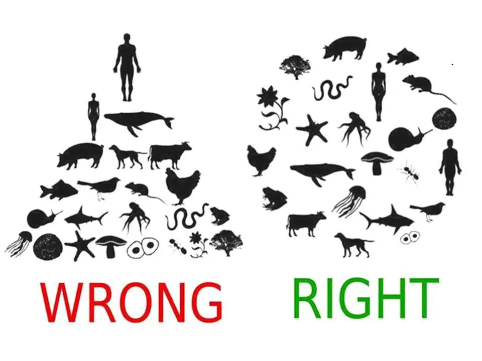

School Projects
This first school project was almost like an intership of its own. Last spring, I took Education's Place in Society (EDUC-210) here at St. Thomas. Part of the class involved a field experience, where we were to travel to Skyline's Math and Science Academy in St. Paul. We were assigned a classroom and for the next two months, we went here during class and worked with the kids. The purpose of this project was to get an experience of what being a teacher looked like. We were to observe our classroom's teacher, and do our best to apply what we were learning through teaching the kids. We worked together with our students to help them problem-solve, complete assignments, and more, while also building relationships with each of them. As it was my first real experience working with kids, I learned a lot from it, primarily the fact that if I teach someday, I do not want it to be elementary students! Although I enjoyed my time there, I learned some about why education is a difficult field.

Another project that I was involved in also related to education. In Diverse Learners and Families (EDUC-329) a partner and I were tasked with bringing to light an issue within the education scene. Our topic was on "Cultural Representation in Curriculum." One of the crucial purposes for this project was to give us another opportunity to practice teaching on a subject to our fellow peers. However, another important aspect of the project was simply becoming more knowledgeable on your topic. As I began to research and consider about how schools have or have not implemented diversity in their curriculum, I began to see where issues can arise regarding inclusion. This project helped me consider more ideas as a possible future educator and on how I should be inclusive in the classroom.
One final project I had to work on was in Environmental Ethics (PHIL-258). In this class, I was tasked with leading a discussion on the Environmental Theory known as Deep Ecology. Our professor's intention was for us to become more knowledgeable on a specific topic while also gaining skills in communication. Our goal would be to gain enough knowledge on our respective subject to be able to lead discussion with the entirety of the class. Our professor wanted us to be able to raise questions to our classmates and think as a philosopher, giving us feedback and raising questions of his own. It was a refreshing way of doing a presentation because the class is just as involved in discussion as the presenter.